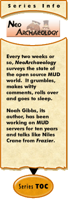

|
NeoArchaeology #5: Real Innovationby Noah Gibbs If you've spent any time reading MUD forums, you've seen posts about 'real' innovation and originality. It was probably part of a post about how this or that MUD is totally original and vastly innovative. This was probably followed by how many classes and races they were going to have, to prove how clever and original the MUD would be. The implication is that it's far more clever and innovative to have 137 classes than only six or seven. Most MUDs making these claims wind up as bad clones of the codebase they started from. Most of the classes and races wind up being nearly indistinguishable from each other. If you have 137 classes, it means you don't have enough time to do even one or two of them very well. In fact, if you're just starting to open your MUD, six or seven classes is still too many to do well. New combat spells with slightly different names and strings are not, in my book, innovation. Dividing the classes into (effectively) priests, mages, warriors and thieves and then having a vast number of 'in-between' classes that get some combination of their powers from the other four also isn't innovation. Dividing mage classes up so that no one mage gets all the spells? Still not innovation. Classless system? Well, if that means starting the character with the ability to gain skills from, effectively, those four classes and make his own class by combining bits from all four...? I could talk all day about the various things you could steal from Dungeons and Dragons to add to a DikuMUD that aren't real innovation. Rather than that, I'll talk about some genuinely interesting and unusual things that certain MUDs are doing. These things might not be utterly unlike anything else out there, but they're done well, they work well, and they aren't like most MUDs. Tonight's Special is...Changes of setting and atmosphere may not be "original" in the sense of being a whole new category that nobody has ever explored before. But they often feel new and different if they're done well, and they open the door to things that MUDs rarely do, things that are more effective in combination than individually. The Inquisition MUD (now past tense?) had a fairly generic, if dark, fantasy setting. Their classes were relatively Diku-standard, and most of their mobiles were nothing enthralling, though the mobiles did have nice mobile scripts and the MUD did have good builders. Inquisition was a very roleplaying-centered MUD, and roleplaying was effectively mandatory for higher-level characters. Their biggest change to the setting, however, was magic. They didn't just make magic rare... They made it illegal! Mage characters were very difficult to play, and you had to apply specially to be allowed to. Mages had to be careful to never reveal their powers, or they'd be shunned or killed for having those powers. This provided an entirely different flavor to the MUD, even with fairly ordinary game features and game mechanics. DiscWorld MUD also does a few interesting and atmospheric things with relatively simple and common mechanics. Its guilds -- wizard, witch, thief, assassin, warrior, priest -- follow the traditional molds. However, each is significantly different from its stereotype, and each cleaves closely to the books on which the MUD is based. Witches get powers like 'taunt', which reduce an opponents stats, or 'bees' which involves throwing honey on an enemy and letting bees arrive and sting them. Priests can sacrifice in various unusual ways. Thieves steal from you... But if they're part of the thieves guild, they leave a reciept! CthulhuMUD, which recently moved to a new URL, is another fine example of a well-executed setting. The MUD is set in the various stories of H.P. Lovecraft. CthulhuMUD, like Inquisition, is done on a base derived from DikuMUD. While CthulhuMUD is mostly a combat MUD, they have some additional game mechanics that support the feel of a Lovecraft story. Classes for humans are mainly things like student, soldier, policeman, cadet or artist... The player organizations include the Order of Dagon, and used to include the U.S. Marines. Anonymity is relatively common in CthulhuMUD -- certain nonhuman races start with the ability to take the form of any NPC, for instance, making them hard to spot and letting them blend in. Masks allow you to appear only as 'a masked human' or 'a masked deep one'. All of these things are supported by game mechanics, so a PC taking the form of a french exchange student appears in all ways to be such a student. You can probably tell the "exchange student" is actually a player, but you can't tell who that player is unless s/he tells you explicitly (and chooses not to lie). CthulhuMUD also has sanity rules. If you fight truly horrific creatures, your character will tend to become less stable, and will begin to run away on his own, or freeze and shake with fear. Eventually you can even lose the character to low sanity. Sanity, unlike hit points, is very expensive to restore. Few skills bring it back, therapists are error-prone and very expensive, and it doesn't come back on its own over time. This also adds to the creepy feeling of being surrounded by lethal horrors (some of them other players!) in a tremendously unfriendly cosmos. And finally, CthulhuMUD has debating, a sort of nonlethal combat conducted for experience and skill points with NPCs like professors who might reasonably be able to debate. I'll explain that in more detail, though, in a few weeks, when I discuss noncombat competitions in MUDs. Hey, Bob, Gimme the UsualNow let's look at some less-innovative settings. Some MUDs will tell you that restringing a standard Diku with a different setting, like the "Smurf Village" stock zone, is innovative. It doesn't feel that way to the players, though. In general, a setting which is just a chance to kill the same old monsters with slighty different names isn't all that different. Put it this way: you could do a Harry Potter MUD where you started by killing spiders and students of other houses, and moved on to killing big spiders and students like Ron and Hermione (and eventually professors, I suppose) from the books. But why? You've sacrificed the feel of the books entirely, and what you've produced is no different from fifty other MUDs, except for the fact that the big baddies have names like Voldemort and Dumbledore. Adding four different mage classes for the four different houses doesn't help, believe me. (I know of no MUD like this. If there is one, I'm not specifically knocking it. Your Harry Potter Diku-based MUD might be just fine for all I know. Okay?) Unfortunately, this practice seems to be even more prevalent with combat-heavy settings like Tolkien. Did you notice that Gandalf never threw a fireball in all the various books, ever? And that he used a sword? And that even at their most warlike, the heroes were never really on a dungeon crawl, killing creature after creature? There was Moria, but they went through that at a dead run, and their enemies had strategy. Tolkien is probably the setting that MUDs are most closely modeled after. Yet even then, most of the atmosphere and setting is stripped out. I'm not saying there aren't technical reasons for the practice (it is easier to just make all your monsters vicious and stupid). I'm just pointing out that MUD administrators seem to have forgotten that current MUDs remove most of the interesting parts of their subject matter — even the MUDs that are truest to it. Our Chef's SpecialI'm not going to talk much about originality. I think as long as an implementor is coming up with something interesting and entertaining, and preferably not common among MUDs, it's a good thing. Genuinely new, unique ideas for MUD mechanics are practically impossible at this point. The way I usually say it is "no matter what new idea you come up with for MUDs, there's a man somewhere that came up with it first. That man's name is J.C. Lawrence". That's actually funny if you read MUD-Dev. You'll have to take my word for it. A ridiculous number of concepts have already been proposed and written in one place and another. Very few have ever been put into free MUD codebases, including whichever codebase you're starting from. So expect to retrace a lot of other people's steps. Being utterly original is nearly impossible... So don't bother. Be entertaining, be reliable, be the first to put it in a MUD server or the first to make free code available for a particular feature. You don't have to be the first person to ever think of it. There's still glory aplenty in building these ideas into somthing usable. And that's glory that nobody has yet claimed. Don't cry over what you can't think of first. Instead, have fun with what you can do first. What's in Fourteen?In fourteen days, I'll go back to covering procedural content generation, but in a little more detail. I'll justify some of the opinions I put forth in that column. I'll elaborate more on exactly how procedural content generation spreads your content thin, and some problems with upgrading. See you then! [ <— #4: Labor-Saving Devices | #6: Procedural Content Generation —> ]
|